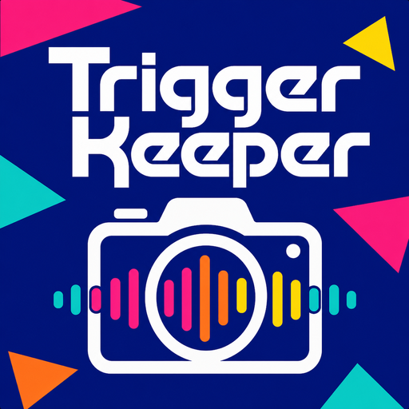

Hands-free group photos. Pick a word, prop your phone, walk into frame — say the word and the camera fires.
Choose any trigger word or phrase. When someone says it, the camera takes the shot — no hands needed.
Prop the phone on a tripod or hand it to anyone. Walk in, get everyone together, and trigger it from the group.
Fire a single shot or a quick burst of three on every trigger, so the blinks and the laughs don't cost you the photo.
Speech recognition runs entirely on your iPhone. Audio is never recorded, stored, or sent anywhere.
Change the trigger word anytime. Funny, secret, or simple — it's your game piece.
Shots land in your Photos library and a dedicated Trigger Keeper album, ready to share.
Last updated: May 2026
Trigger Keeper is a hands-free camera app for iPhone. You choose a trigger word, prop your phone up, and the camera takes a photo whenever someone says the word. This policy explains exactly what the app does with your camera, microphone, voice, and photos.
The short version: everything happens on your device. Trigger Keeper has no servers, no accounts, and no analytics. The developer cannot see your photos, hear your audio, or access any of your data.
To listen for your trigger word, Trigger Keeper uses your microphone together with Apple's on-device speech recognition.
Trigger Keeper does not collect, access, or receive any of your data. There are no servers, no accounts, and no cloud sync. The developer has no visibility into how you use the app, what your trigger word is, or what photos you take.
Your preferences — your trigger word, recent trigger words, capture mode, and flash setting — are stored locally on your device. They never leave it. Uninstalling the app removes these settings.
Trigger Keeper contains no analytics, tracking, advertising, or crash-reporting code.
Trigger Keeper asks for camera, microphone, speech recognition, and photo-library access so it can do what it does. You can grant or revoke any of these at any time in the iOS Settings app, under Trigger Keeper. If you revoke a permission, the related feature stops working until you grant it again; the app will point you to Settings when this happens.
Trigger Keeper does not collect any personal information from anyone, including children.
If this policy changes, the updated version will be posted here with a new "Last updated" date.
Questions, feedback, or issues? Reach out anytime at copycopyapp@gmail.com.